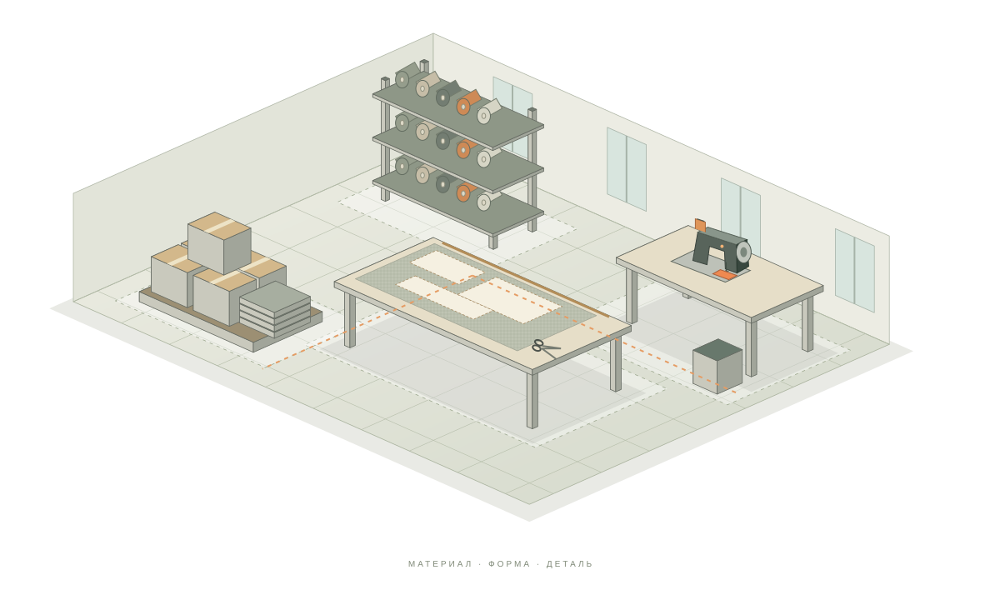
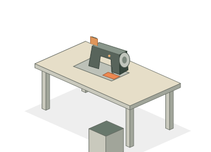
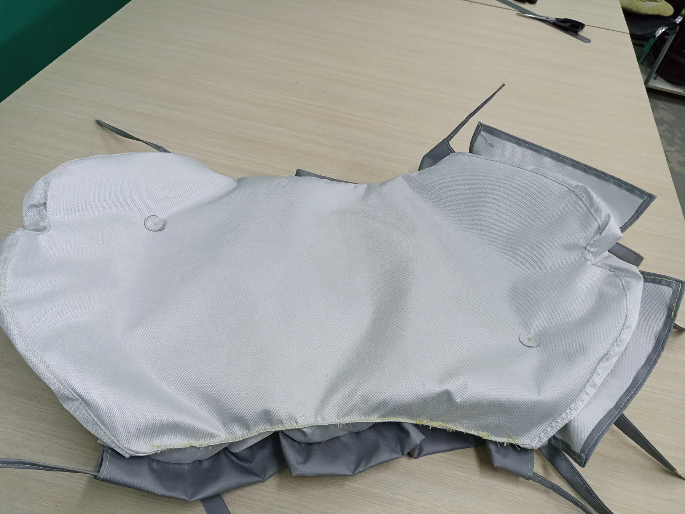

Лекала и раскрой
Подготовка деталей по размерам и конструкции вашего изделия.
НАШИ ВОЗМОЖНОСТИ
Подбираем материалы, разрабатываем лекала, выполняем раскрой и пошив. Каждая операция — под конструкцию и назначение вашего изделия.
Познакомиться с производством ↓ПРОИЗВОДСТВО ИЗНУТРИ

ОБОРУДОВАНИЕ И ОПЕРАЦИИ
Показываем, что позволяет сделать
каждая операция.
Подготовка деталей по размерам и конструкции вашего изделия.

Работа со средними, тяжёлыми и сверхтяжёлыми тканями.
Кольца, люверсы, крепления и фиксаторы под конструкцию и условия использования.
В окончательной версии здесь будут фотографии установленного оборудования, модели и примеры выполняемых операций.

ДЕТАЛИ, КОТОРЫЕ РАБОТАЮТ
Покажем строчку, внутренние слои и крепления крупным планом. У каждой детали — своё назначение в конструкции изделия.
ОТ ЗНАКОМСТВА — К ВАШЕЙ ЗАДАЧЕ
Фотографии, размеры и чертежи помогут начать разговор предметно.